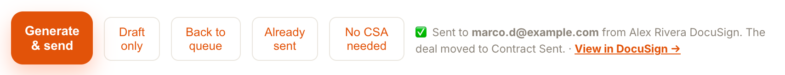
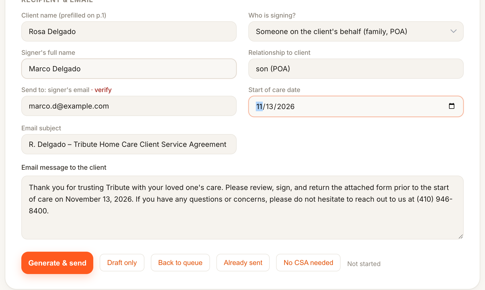
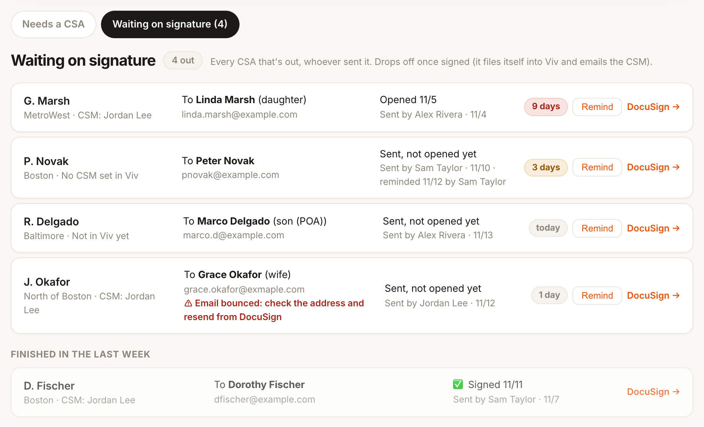
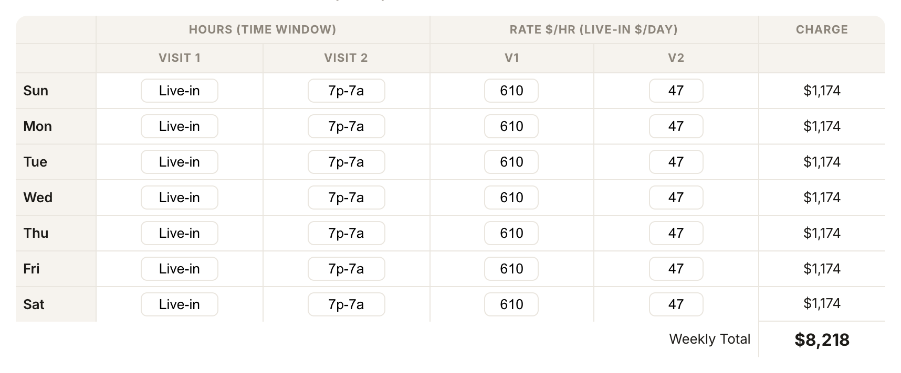
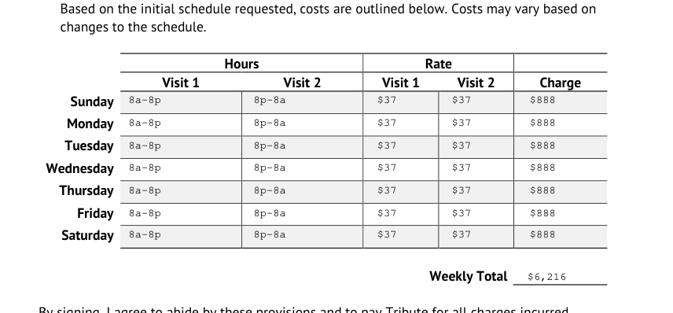
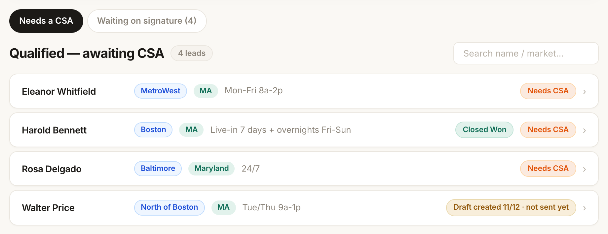
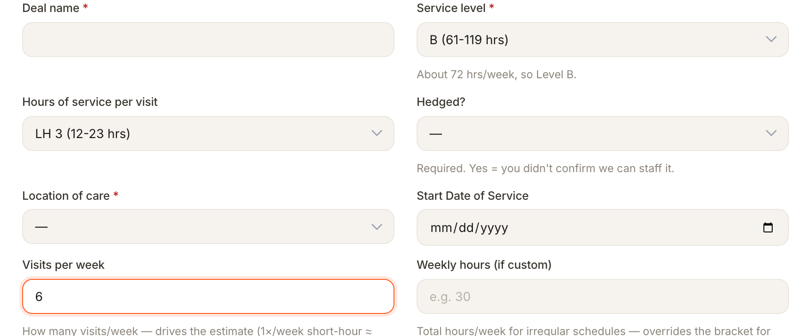

What's new in the Lead Taker Tool
Changes from November 4 to 13, almost all from your feedback. Most of them are in the Lead Desk · CSAs tab. Refresh the tool once to pick everything up.
1Send the CSA in one click
At the bottom of a lead there are now two ways to create the CSA:
- Generate & send (orange) creates the CSA and DocuSign emails it to the signer right away. Before it goes, a box shows the signer, their email, the client, the start of care and the weekly total so you can check them. Click OK to send.
- Draft only works the way the tool used to: it saves a draft in your DocuSign so you can look it over and press Send there.

When it's sent you'll see ✅ Sent to the signer's email, and the deal moves to Contract Sent. If DocuSign refuses to send it (for example a missing field), the tool says why and keeps it as a draft instead of saying "Sent".
2A family member or POA can sign
The CSA used to go out with the client as the signer, even when their son or daughter was signing. Now you choose who signs.
- Under Recipient & email, set Who is signing? to Someone on the client's behalf (family, POA).
- Type the signer's full name and their relationship to the client (for example "son" or "daughter (POA)").
- Put the signer's email in Send to.

The client's own name still prints on page 1 of the CSA. The signed copy still files itself into the right client in Viv.
3See every CSA that's waiting on a signature
The Lead Desk now has two tabs: Needs a CSA (the queue you know) and Waiting on signature. The second one lists every CSA that has gone out and hasn't been signed. Everyone can see it, whoever sent the CSA, and it includes CSAs sent straight from DocuSign.

Each row shows:
- The client, their market and their CSM from Viv. "Not in Viv yet" means the client hasn't been set up in Viv; "No CSM set in Viv" means they're in Viv without a CSM.
- Who it went to and their email. A red warning means the email bounced: check the address and send it again from DocuSign.
- Whether the family has opened it, and who sent it and when.
- How long it's been waiting:
Remind has DocuSign send the signing email again. It can be used once an hour per CSA, and the row shows who sent the last reminder. DocuSign → opens the envelope.
A CSA drops off the list once it's signed, or once a newer copy for the same client is signed. Declined and voided CSAs stay under Finished in the last week so nothing disappears without anyone noticing. When a CSA is signed, it still files itself into the client's Documents in Viv and emails the CSM (or Courtney when no CSM is set).
4Live-in in the CSA grid
The grid now understands live-in. In Specify visit times, type something like Live-in every day + overnights Fri-Sun or LI + overnights and click Apply.

- A live-in day is charged at the live-in day rate, not by the hour. The Rate column shows $/day for live-in and $/hr for everything else.
- An overnight added on top is charged as its own visit at the hourly rate.
- If you change a cell between live-in and hourly, the rate and the total update to match.
5The schedule grid lines up on the CSA
On the Maryland CSAs, every line of the weekly schedule printed one row too low, so Sunday's visits showed on Monday's row. The other CSAs drifted a little toward the bottom of the table. All CSA templates are fixed, so new CSAs line up with the table.

CSAs that went out before November 12 keep the old layout. If one of those needs to look right, generate it again and resend it.
6Leads saved straight as Closed Won show up
A lead entered on the form directly as Closed Won didn't appear in the queue, so there was no way to send its CSA from the tool. It now appears for 7 days with a green Closed Won tag, or until its CSA goes out.

Sending a CSA for a Closed Won lead leaves the deal stage alone. A lead whose CSA was only drafted shows an amber Draft created · not sent yet tag until it's sent.
7Service level matches the schedule
Some leads entered as Level B were saved as Level D. The tool was trusting the AI's guess from the notes. Now the service level is worked out from Hours of service per visit × Visits per week (or Weekly hours when you fill that in), and the reason shows under the box.

24/7 counts as 168 hours a week. You can still pick a level yourself; if it doesn't match the schedule, an amber note tells you so you can double-check.
8Start date defaults to today
The availability check's Start date used to default to June 15. It now starts as today's date, and goes back to today when you clear the form for the next lead.
Questions or something not working? Message Andrew Dobson. Screenshots help.